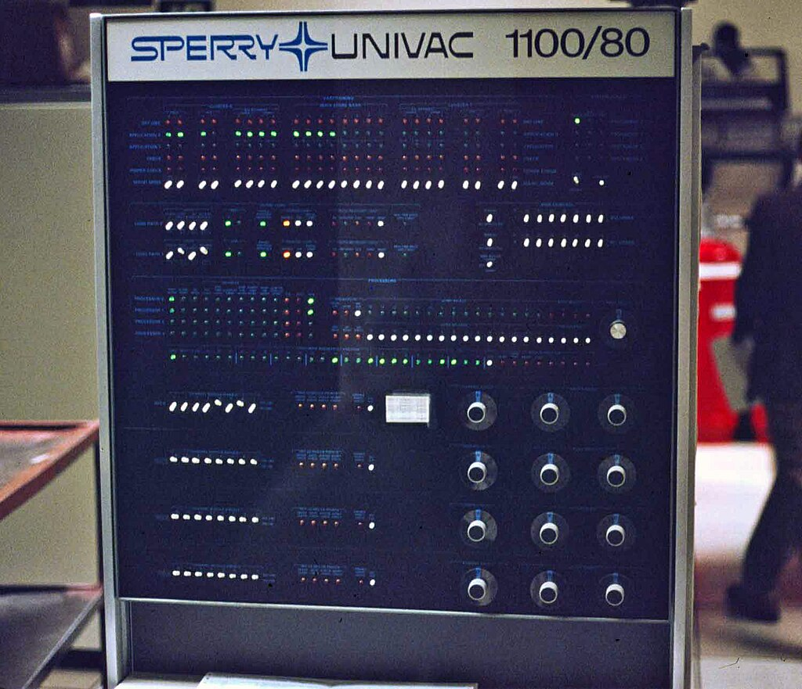

Calculatoarele din a doua generatie
1956-1963
Calculatoarele din a doua generatie utilizau tehnologia tranzistoarelor in schimbul tuburilor electronice. Un tranzistor este un dispozitiv electronic care aplifica un semnal sau inchide/deschide un circuit.
Utilizarea tranzistorilor a facut posibila evolutia calculatorelor datorita dimensiunilor sale reduse , eficientei si pretului redus de fabricatie.
Totodata in aceasta generatie au evoluat procesoarele, memoriea si limbajele de programare.
Limbajele de programere au facut schimbarea de la low-level la high-level, lucru care a facut programarea calculatoarelor mult mai usoara si accesibila. Exemple de limbaje: FORTRAN, ALGOL, COBOL.
Exemple de calculatoare din aceasta generatie:
- IBM 7090
- UNIVAC 1100 
Principalele caracteristici ale acestei generatii:
| Caracteristica | Componenta |
|---|---|
| Principala componenta electronica | Tranzistorul |
| Limbajul de programre | Limbaj masina si limbaj de asamblare |
| Memoria | Benzi magnetice si discuri magnetice |
| Dispozitive I/O | Cartele perforate si benzi magnetice |
| Viteza si marime | Mai mici in dimensiune si consum de energie redus |